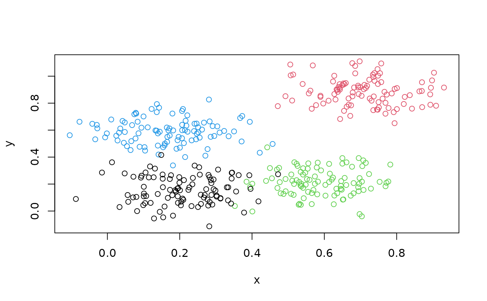
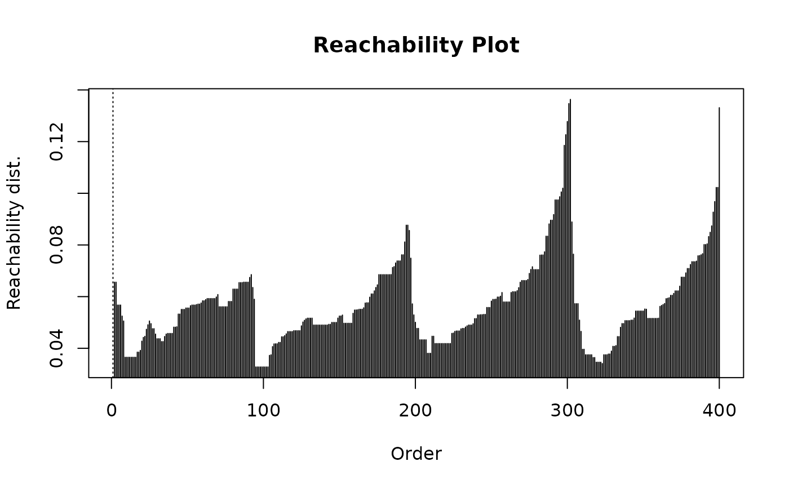
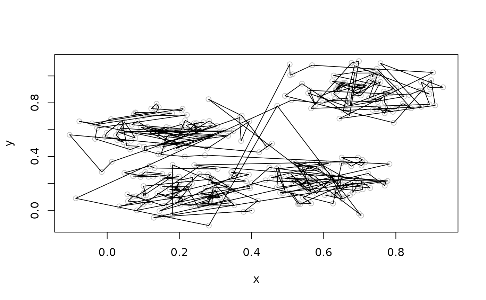
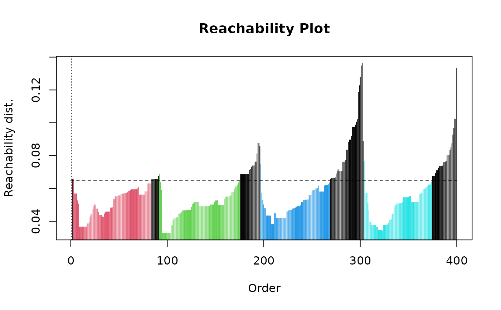
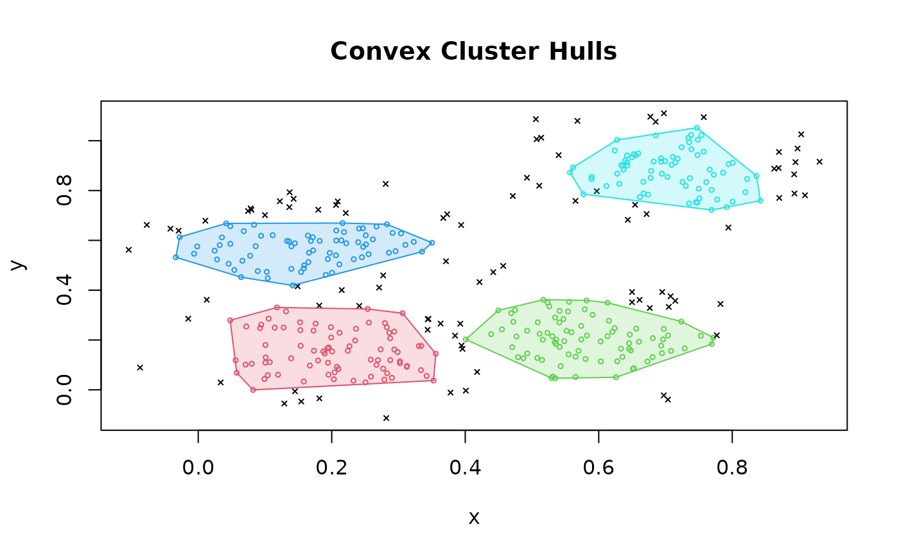
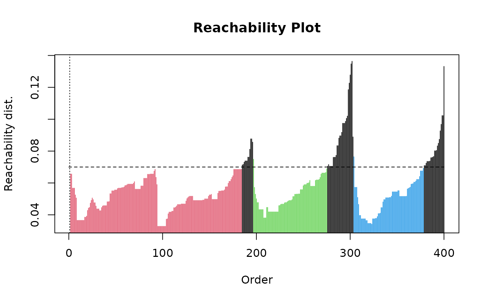
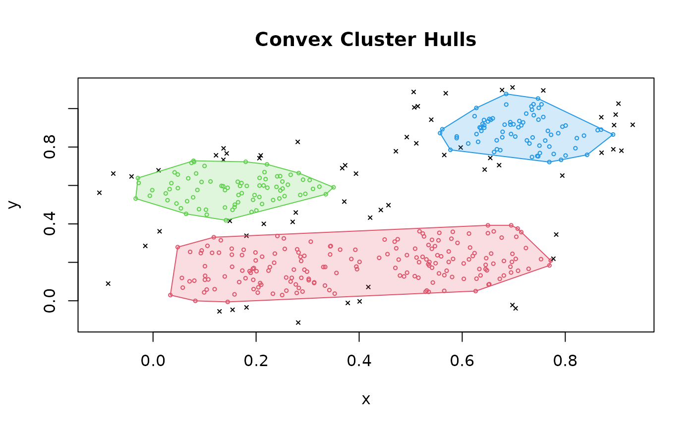
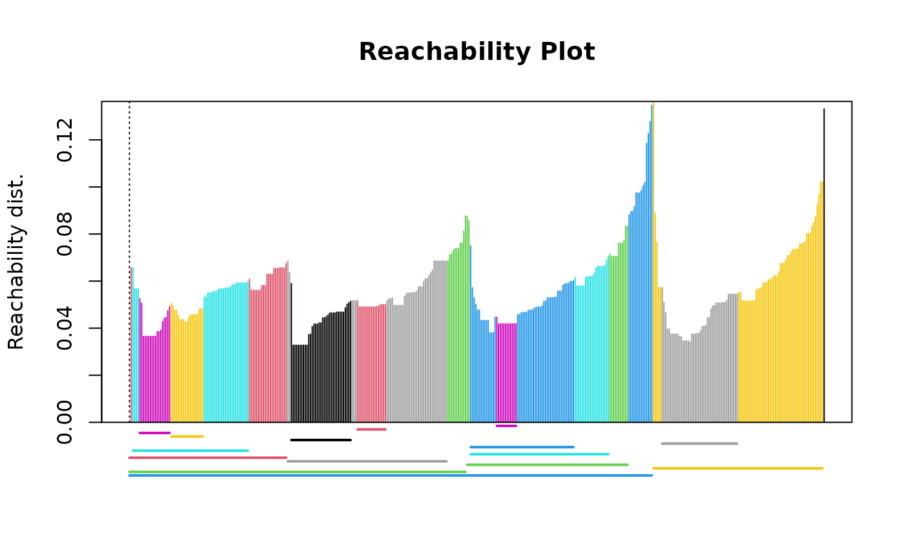
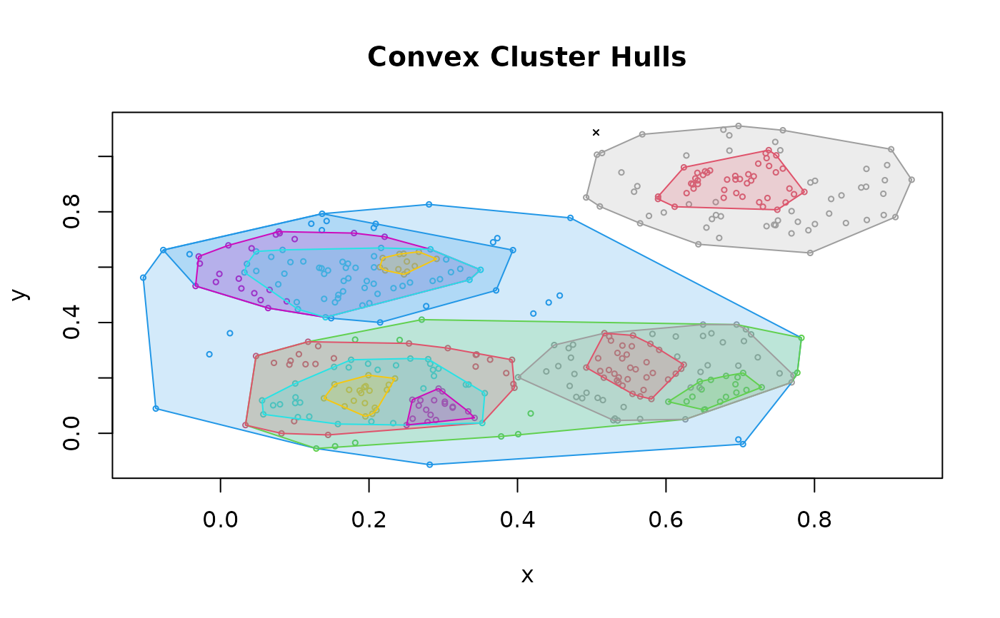

Ordering Points to Identify the Clustering Structure (OPTICS)
Source:R/optics.R, R/optics_extractXi.R, R/predict.R
optics.RdImplementation of the OPTICS (Ordering points to identify the clustering structure) point ordering algorithm using a kd-tree.
Usage
optics(x, eps = Inf, minPts = 5, ...)
# S3 method for class 'optics'
print(x, ...)
# S3 method for class 'optics'
plot(x, cluster = TRUE, predecessor = FALSE, ...)
# S3 method for class 'optics'
as.reachability(object, ...)
# S3 method for class 'optics'
as.dendrogram(object, ...)
extractDBSCAN(object, eps_cl)
extractXi(object, xi, minimum = FALSE, correctPredecessors = TRUE)
# S3 method for class 'optics'
predict(object, newdata, data, ...)Arguments
- x
a data matrix or a dist object.
- eps
maximum epsilon neighborhood size only used for performance. When set to
Inf, then the actual maximal needed radius is estimated fromminPtsand the data. The upper limit can be further reduced to improve performance. If set too low then many reachability values will erroneously becomeInfshown as dashed lines in the reachability plot.epsshould be increased.- minPts
the parameter is used to identify dense neighborhoods and the reachability distance is calculated as the distance to the minPts nearest neighbor. Controls the smoothness of the reachability distribution. Default is 5 points.
- ...
additional arguments are passed on to fixed-radius nearest neighbor search algorithm. See
frNN()for details on how to control the search strategy.- cluster, predecessor
plot clusters and predecessors.
- object
clustering object.
- eps_cl
Threshold to identify clusters (
eps_cl <= eps).- xi
Steepness threshold to identify clusters hierarchically using the Xi method.
- minimum
logical, representing whether or not to extract the minimal (non-overlapping) clusters in the Xi clustering algorithm.
- correctPredecessors
logical, correct a common artifact by pruning the steep up area for points that have predecessors not in the cluster–found by the ELKI framework, see details below.
- newdata
new data points for which the cluster membership should be predicted.
- data
the data set used to create the clustering object.
Value
An object of class optics with components:
- eps
value of
epsparameter.- minPts
value of
minPtsparameter.- order
optics order for the data points in
x.- reachdist
reachability distance for each data point in
x.- coredist
core distance for each data point in
x.
For extractDBSCAN(), in addition the following
components are available:
- eps_cl
the value of the
eps_clparameter.- cluster
assigned cluster labels in the order of the data points in
x.
For extractXi(), in addition the following components
are available:
- xi
Steepness threshold
xi.- cluster
assigned cluster labels in the order of the data points in
x.- clusters_xi
data.frame containing the start and end of each cluster found in the OPTICS ordering.
Details
The Algorithm
This implementation of OPTICS implements the original
algorithm as described by Ankerst et al (1999). OPTICS is an ordering
algorithm with methods to extract a clustering from the ordering.
While using similar concepts as DBSCAN, minPts in OPTICS has a different
effect than in DBSCAN. Since it is also used to calculate the reachability
distance, larger values will make the reachability distance plot smoother.
The parameter eps is optional and defaults to Inf.
It represents
an upper limit for the neighborhood size used to reduce
computational complexity which is helpful for large data sets.
OPTICS linearly orders the data points such that points which are spatially
closest become neighbors in the ordering. The closest analog to this
ordering is dendrogram in single-link hierarchical clustering. The algorithm
also calculates the reachability distance for each point.
plot() (see reachability_plot)
produces a reachability plot which shows each points reachability distance
between two consecutive points
where the points are sorted by OPTICS. Valleys represent clusters (the
deeper the valley, the more dense the cluster) and high points indicate
points between clusters.
Specifying the Data
If x is specified as a data matrix, then Euclidean distances and fast
nearest neighbor lookup using a kd-tree are used. See kNN() for
details on the parameters for the kd-tree.
Extracting a Clustering
Several methods to extract a clustering from the order returned by OPTICS are implemented:
extractDBSCAN()extracts a clustering from an OPTICS ordering that is similar to what DBSCAN would produce with an eps set toeps_cl(see Ankerst et al, 1999). The only difference to a DBSCAN clustering is that OPTICS is not able to assign some border points and reports them instead as noise.extractXi()extract clusters hierarchically specified in Ankerst et al (1999) based on the steepness of the reachability plot. One interpretation of thexiparameter is that it classifies clusters by change in relative cluster density. The used algorithm was originally contributed by the ELKI framework and is explained in Schubert et al (2018), but contains a set of fixes.
References
Mihael Ankerst, Markus M. Breunig, Hans-Peter Kriegel, Joerg Sander (1999). OPTICS: Ordering Points To Identify the Clustering Structure. ACM SIGMOD international conference on Management of data. ACM Press. pp. doi:10.1145/304181.304187
Hahsler M, Piekenbrock M, Doran D (2019). dbscan: Fast Density-Based Clustering with R. Journal of Statistical Software, 91(1), 1-30. doi:10.18637/jss.v091.i01
Erich Schubert, Michael Gertz (2018). Improving the Cluster Structure Extracted from OPTICS Plots. In Lernen, Wissen, Daten, Analysen (LWDA 2018), pp. 318-329.
See also
Density reachability.
Other clustering functions:
dbscan(),
extractFOSC(),
hdbscan(),
jpclust(),
ncluster(),
sNNclust()
Examples
set.seed(2)
n <- 400
x <- cbind(
x = runif(4, 0, 1) + rnorm(n, sd = 0.1),
y = runif(4, 0, 1) + rnorm(n, sd = 0.1)
)
plot(x, col=rep(1:4, times = 100))

### run OPTICS (Note: we use the default eps calculation)
res <- optics(x, minPts = 10)
res
#> OPTICS ordering/clustering for 400 objects.
#> Parameters: minPts = 10, eps = 0.193786846197958, eps_cl = NA, xi = NA
#> Available fields: order, reachdist, coredist, predecessor, minPts, eps,
#> eps_cl, xi
### get order
res$order
#> [1] 1 363 209 349 337 301 357 333 321 285 281 253 241 177 153 57 257 29
#> [19] 77 169 105 293 229 145 181 385 393 377 317 381 185 117 101 9 73 237
#> [37] 397 369 365 273 305 245 249 309 157 345 213 205 97 49 33 41 193 149
#> [55] 17 83 389 25 121 329 5 161 341 217 189 141 85 53 225 313 289 261
#> [73] 221 173 69 61 297 125 81 133 129 197 109 137 59 93 165 89 21 13
#> [91] 277 191 203 379 399 375 351 311 235 231 227 71 11 299 271 291 147 55
#> [109] 23 323 219 275 47 263 3 367 331 175 87 339 319 251 247 171 111 223
#> [127] 51 63 343 303 207 151 391 359 287 283 215 143 131 115 99 31 183 43
#> [145] 243 199 79 27 295 67 347 255 239 195 187 139 107 39 119 179 395 371
#> [163] 201 123 159 91 211 355 103 327 95 7 167 35 267 155 387 383 335 315
#> [181] 259 135 15 113 279 373 4 353 265 127 45 37 19 276 224 361 260 288
#> [199] 336 368 348 292 268 252 120 108 96 88 32 16 340 156 388 372 356 332
#> [217] 304 220 188 168 136 124 56 236 28 244 392 184 76 380 232 100 116 112
#> [235] 256 72 8 280 64 52 208 172 152 148 360 352 192 160 144 284 216 48
#> [253] 84 92 36 20 212 272 264 200 128 80 180 364 196 12 132 40 324 308
#> [271] 176 164 68 316 312 384 300 344 328 248 204 140 296 24 320 228 60 44
#> [289] 233 65 400 376 240 163 104 396 307 75 14 325 269 262 234 382 294 206
#> [307] 198 374 310 362 318 386 358 330 278 210 298 282 122 98 34 26 174 142
#> [325] 46 6 62 118 190 202 114 322 286 38 242 394 342 266 162 130 30 182
#> [343] 2 74 314 290 246 194 170 126 158 378 350 254 226 214 70 18 10 366
#> [361] 354 186 150 86 306 102 338 346 134 250 138 94 78 390 274 58 42 258
#> [379] 66 90 146 370 222 218 326 82 110 270 334 178 166 398 22 50 238 106
#> [397] 154 302 230 54
### plot produces a reachability plot
plot(res)

### plot the order of points in the reachability plot
plot(x, col = "grey")
polygon(x[res$order, ])

### extract a DBSCAN clustering by cutting the reachability plot at eps_cl
res <- extractDBSCAN(res, eps_cl = .065)
res
#> OPTICS ordering/clustering for 400 objects.
#> Parameters: minPts = 10, eps = 0.193786846197958, eps_cl = 0.065, xi = NA
#> The clustering contains 4 cluster(s) and 92 noise points.
#>
#> 0 1 2 3 4
#> 92 81 84 72 71
#>
#> Available fields: order, reachdist, coredist, predecessor, minPts, eps,
#> eps_cl, xi, cluster
plot(res) ## black is noise

hullplot(x, res)

### re-cut at a higher eps threshold
res <- extractDBSCAN(res, eps_cl = .07)
res
#> OPTICS ordering/clustering for 400 objects.
#> Parameters: minPts = 10, eps = 0.193786846197958, eps_cl = 0.07, xi = NA
#> The clustering contains 3 cluster(s) and 62 noise points.
#>
#> 0 1 2 3
#> 62 184 79 75
#>
#> Available fields: order, reachdist, coredist, predecessor, minPts, eps,
#> eps_cl, xi, cluster
plot(res)

hullplot(x, res)

### extract hierarchical clustering of varying density using the Xi method
res <- extractXi(res, xi = 0.01)
res
#> OPTICS ordering/clustering for 400 objects.
#> Parameters: minPts = 10, eps = 0.193786846197958, eps_cl = NA, xi = 0.01
#> The clustering contains 15 cluster(s) and 1 noise points.
#>
#> Available fields: order, reachdist, coredist, predecessor, minPts, eps,
#> eps_cl, xi, cluster, clusters_xi
plot(res)

hullplot(x, res)
#> Warning: Not enough colors. Some colors will be reused.

# Xi cluster structure
res$clusters_xi
#> start end cluster_id
#> 1 1 91 1
#> 2 1 194 2
#> 3 1 301 3
#> 4 3 69 4
#> 5 7 24 5
#> 6 25 43 6
#> 7 92 183 7
#> 8 94 128 8
#> 9 132 148 9
#> 10 195 287 10
#> 11 197 256 11
#> 12 197 276 12
#> 13 212 223 13
#> 14 302 399 14
#> 15 307 350 15
### use OPTICS on a precomputed distance matrix
d <- dist(x)
res <- optics(d, minPts = 10)
plot(res)